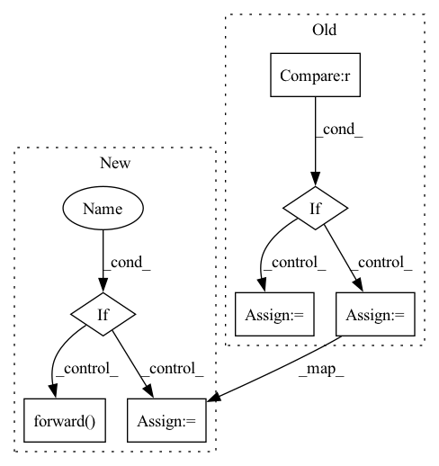

Pattern ID :11885
Before Change
sz = 50
for patch_size in POSSIBLE_PATCH_SIZE:
if image_size[1] % patch_size == 0 :
sz = patch_size
patch_num = (image_size[0] // sz, image_size[1] // sz)
break
is_ref_model = type(network) == RefNeRF
for k in range(patch_num[0]):
for j in range(patch_num[1]):
camera_rays = torch.cat((render_pose[:, -1].expand(sz, sz, -1), ray_raw[(sz * k):(sz * (k + 1)), (sz * j):(sz * (j + 1))]), dim = -1).reshape(-1, 6) // shape (2500, 6)
sampled_lengths = (all_lengths + torch.rand((sz, sz, 64)).cuda() * resolution).view(-1, 64) // shape (2500, sample_num)
pts = render_pose[:, -1].unsqueeze(0) + sampled_lengths[..., None] * camera_rays[:, None, 3:]
density = prop_net.forward(pts)
prop_weights_raw = ProposalNetwork.get_weights(density, sampled_lengths, camera_rays[:, 3:]) // (ray_num, num of proposal interval)
prop_weights = maxBlurFilter(prop_weights_raw, 0.01)
fine_lengths, _ = inverseSample(prop_weights, sampled_lengths, sample_num + 1, sort = True)
fine_samples, fine_lengths = NeRF.coarseFineMerge(camera_rays, sampled_lengths, fine_lengths)
// fine_samples = NeRF.length2pts(camera_rays, fine_lengths)
output_rgbo = network.forward(fine_samples)
if is_ref_model == True:
output_rgbo, normal = output_rgbo
output_rgbo[..., -1] = softplus(output_rgbo[..., -1] + 0.5)After Change
prop_weights_raw = ProposalNetwork.get_weights(density, sampled_lengths, camera_rays[:, 3:]) // (ray_num, num of proposal interval)
prop_weights = maxBlurFilter(prop_weights_raw, 0.01)
fine_lengths, _ = inverseSample(prop_weights, sampled_lengths, sample_num + 1, sort = True)
if is_ref_model :
fine_samples, fine_lengths = NeRF.coarseFineMerge(camera_rays, sampled_lengths, fine_lengths)
output_rgbo, normal = network.forward( fine_samples)
output_rgbo[..., -1] = softplus(output_rgbo[..., -1] + 0.5)
else:
fine_samples = NeRF.length2pts(camera_rays, fine_lengths)
output_rgbo = network.forward(fine_samples)
part_image, _, extras = NeRF.render(
output_rgbo, fine_lengths, camera_rays[..., 3:], In pattern: SUPERPATTERN
Frequency: 3
Non-data size: 7
Instances Fragment ID: 39974211
Project Name: enigmatisms/nerf
Commit Name: a6436d76592f3832a4c96ca1aa768f1d55e7801c
Time: 2022-08-19
Author: 984041003@qq.com
File Name: py/procedures.py
M Class Name: AnonimousClass
N Class Name: AnonimousClass
M Method Name: render_image(11)
N Method Name: render_image(11)
M Parent Class:
N Parent Class:
M File Name: py/procedures.py
N File Name: py/procedures.py
M Start Line: 28
M End Line: 73
N Start Line: 38
N End Line: 78
Before Change
output = self.bert(input_ids=input_ids, attention_mask=attention_mask, token_type_ids=token_type_ids)
sequence_output = output[0]
if labels is not None :
// Select only the masked tokens for the classifier
max_number_of_masked_tokens = int(labels.size(1) * 0.25)
masked_lm_labels, masked_lm_positions = torch.topk(labels, k=max_number_of_masked_tokens, dim=1)
masked_output = self.gather_indices(sequence_output, masked_lm_positions)
else:
// This case should never happen during training
masked_output = sequence_output
prediction_scores = self.cls(masked_output)
output = (prediction_scores,) + output[2:]After Change
return self
def forward(self, input_ids, attention_mask, token_type_ids=None, labels=None):
if self.training :
output = self.bert(input_ids=input_ids, attention_mask=attention_mask, token_type_ids=token_type_ids)
sequence_output = output[0]
// Select only the masked tokens for the classifier
max_number_of_masked_tokens = int(labels.size(1) * 0.25)
masked_lm_labels, masked_lm_positions = torch.topk(labels, k=max_number_of_masked_tokens, dim=1)
masked_output = self.gather_indices(sequence_output, masked_lm_positions)
prediction_scores = self.cls(masked_output)
output = (prediction_scores,) + output[2:]
masked_lm_loss = F.cross_entropy(
prediction_scores.view(-1, self.config.vocab_size), masked_lm_labels.view(-1)
).float()
return (masked_lm_loss,)
else:
return super().forward(
input_ids=input_ids,
attention_mask=attention_mask,
token_type_ids=token_type_ids,
labels=labels,
return_dict=False,
)
class BertPipelineMixin(PipelineMixin):
def parallelize(self): Fragment ID: 39974215
Project Name: huggingface/optimum-graphcore
Commit Name: 66eefe1acd3c6f70badd77131320450e2606d5c6
Time: 2022-03-21
Author: jamesbr@graphcore.ai
File Name: optimum/graphcore/models/bert/modeling_bert.py
M Class Name: PipelinedBertForMaskedLM
N Class Name: PipelinedBertForMaskedLM
M Method Name: forward(5)
N Method Name: forward(5)
M Parent Class: PipelineMixin,BertForMaskedLM
N Parent Class: PipelineMixin,BertForMaskedLM
M File Name: optimum/graphcore/models/bert/modeling_bert.py
N File Name: optimum/graphcore/models/bert/modeling_bert.py
M Start Line: 267
M End Line: 288
N Start Line: 267
N End Line: 293
Before Change
outputs = self.roberta(input_ids, attention_mask=attention_mask)
sequence_output = outputs[0]
if labels is not None :
// Select only the masked tokens for the classifier
max_number_of_masked_tokens = int(labels.size(1) * 0.25)
masked_lm_labels, masked_lm_positions = torch.topk(labels, k=max_number_of_masked_tokens, dim=1)
masked_output = self.gather_indices(sequence_output, masked_lm_positions)
else:
// This case should never happen during training
masked_output = sequence_output
prediction_scores = self.lm_head(masked_output)
outputs = (prediction_scores,) + outputs[2:]After Change
return self
def forward(self, input_ids, attention_mask, labels=None):
if self.training :
outputs = self.roberta(input_ids, attention_mask=attention_mask)
sequence_output = outputs[0]
// Select only the masked tokens for the classifier
max_number_of_masked_tokens = int(labels.size(1) * 0.25)
masked_lm_labels, masked_lm_positions = torch.topk(labels, k=max_number_of_masked_tokens, dim=1)
masked_output = self.gather_indices(sequence_output, masked_lm_positions)
prediction_scores = self.lm_head(masked_output)
masked_lm_loss = F.cross_entropy(
prediction_scores.view(-1, self.config.vocab_size), masked_lm_labels.view(-1)
).float()
return (masked_lm_loss,)
else:
return super().forward(
input_ids=input_ids, attention_mask=attention_mask, labels=labels, return_dict=False
)
@register(RobertaForSequenceClassification)
class PipelinedRobertaForSequenceClassification(RobertaForSequenceClassification, RobertaPipelineMixin): Fragment ID: 39974219
Project Name: huggingface/optimum-graphcore
Commit Name: 66eefe1acd3c6f70badd77131320450e2606d5c6
Time: 2022-03-21
Author: jamesbr@graphcore.ai
File Name: optimum/graphcore/models/roberta/modeling_roberta.py
M Class Name: PipelinedRobertaForMaskedLM
N Class Name: PipelinedRobertaForMaskedLM
M Method Name: forward(4)
N Method Name: forward(4)
M Parent Class: PipelineMixin,RobertaForMaskedLM
N Parent Class: PipelineMixin,RobertaForMaskedLM
M File Name: optimum/graphcore/models/roberta/modeling_roberta.py
N File Name: optimum/graphcore/models/roberta/modeling_roberta.py
M Start Line: 144
M End Line: 165
N Start Line: 144
N End Line: 164